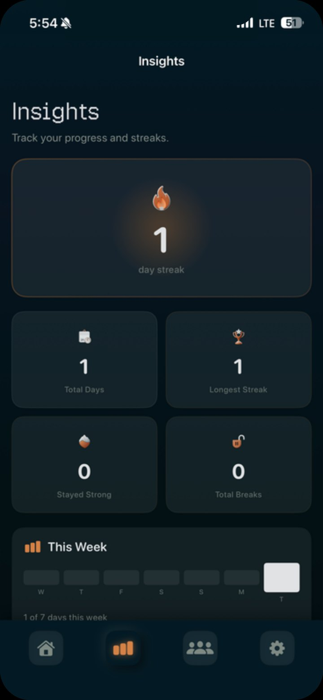
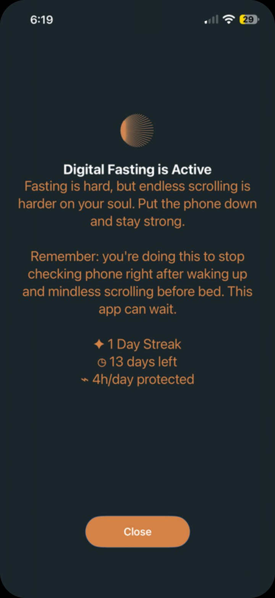
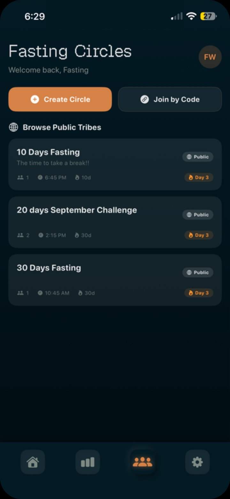
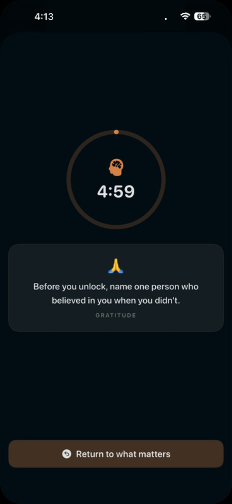

01 · Today
Morning. Day 2 of 14.
Where you are in the fast at a glance: the day, the days left, the date you finish. Seven days to ninety, or your own length.
Productivity · iPhone & iPad
Reclaim your attention. One day at a time.
NURU applies an old idea to a new problem. Choose how long to fast from the apps that pull at you, and system-level shields hold the line — quietly, with encouragement instead of shame. Fast alone, or with a Circle.
02 — A closer look
Keep scrolling — the screens move with you.
01 · Today
Where you are in the fast at a glance: the day, the days left, the date you finish. Seven days to ninety, or your own length.

02 · Insights
Your streak, your longest run, the days you stayed strong and the breaks you took, laid out week by week.

03 · Block Screen
A system-level shield — but not a wall. It reminds you why you started: the streak you're holding, the days left, the hours protected.

04 · Circles — Premium
Create a circle or join one by code. Everyone shares one daily break window, shown in their own timezone.

05 · Mindful Unlock
A short timer and a question worth sitting with, instead of an instant override. Try it below.
00 / 05 · A closer look
03 — Try it
Every early unlock goes through the same loop. Hover or tap a blocked app to walk through it.
In the app the pause lasts five minutes. This demo runs for twelve seconds.
Day 2 of 14 · Fast active
Your fast is on.
Hover or tap a blocked app.
Social media is shielded
0:12
Take a breath first.
Before you unlock, name one person who believed in you when you didn't.
Gratitude
Nuru
Welcome back.
That can wait. Your streak holds.
Free to download on iPhone and iPad. Circles Premium is an optional subscription with a 7-day free trial.